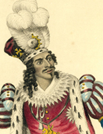

|

|

|
|
|
Actor James Hewlett was one of the most prominent stage performers of
the antebellum era, and may have been the first African American to act
professionally.
Little is known of Hewlett's early years. He was born in the West
Indies, where he found employment on board a packet ship, which allowed
him to immigrate to New York sometime in the 1810s. In 1821, William
Alexander Brown--a free African American living in New York City--opened
his African Grove Theater. Here, as one commentator put it, "ebony lads
and lasses could obtain ice cream, ice punch, and hear music from the
big drum and clarionet." As the African Grove expanded to include stage
performances, Brown presented the best black actors in the city; among
them was Hewlett.
Neither Hewlett nor Brown assumed African American inferiority in a
white-dominated medium. As such, Brown presented Shakespearean fare with
regularity, and Hewlett--billed as "Shakespeare's proud
Representative"--played Richard III and Hamlet. This is not to say that
they entirely avoided African-American themes, however. For example,
Hewlett played the lead role in The Drama of King Shotaway (1823)
for several months. The story of a West Indies slave insurrection, this
may have been the first American play to have a black author.
Hewlett always assumed a leadership role as the best singer, dancer,
actor, and choreographer for Brown's company, though this was a
difficult role to fill. Whites would come to Brown's African American
theater to cajole and harass the black actors as poseurs incapable of
performing Shakespeare and other stock plays at an acceptable level.
While certain whites harassed Hewlett and the other actors, there were
more than a few who came to recognize and admire their skills as
talented Thespians. Regrettably, these were a minority and Brown
eventually had to segregate the theater, putting whites in the back
rows.
In his last several years at the African Grove, Hewlett focused
largely on recitals. During these performances, he would appear on stage
alone, performing monologues from Shakespearean plays. Generally,
instead of imposing his own interpretation on these pieces, he would he
imitate the most famous performers of the day--Edmund Kean, Charles
Matthews, and others--as was the norm for up-and-coming actors to do.
This continued until 1831, when Hewlett left Brown's company and set out
on his own.
During his solo tours of the 1830s, Hewlett performed songs and
recitations for mixed audiences, often in racially volatile situations.
At this time, white performers were developing a style of theater called
minstrelsy, in which African American appearance, culture, and customs
were lampooned. Hewlett turned that process upside-down by using the
European songs to express black discontent. For example, he would often
sing songs like Robert Burns's "Scots, Wha' Hae Wi' Wallace Bled" to
express a sentiment near and dear to the hearts of many black Americans:
Wha for Scotland's king and law,
Freedom's sword will strongly draw,
Free-man stand, or Free-man fa'
Let him follow me!
By oppression's woes and pains!
By your sons in servile chains!
We will drain our dearest veins!
But they shall be free!
By all evidence, Hewlett's solo performances were only a mild
success. Certainly, his skill as a performer and his high-energy style
were assets, but his skin color and his none-too-subtle critiques of
white racism worked against him. As a consequence, information about the
final years of his career is scarce. His last known performance was in
Trinidad in 1839--singing songs of freedom to plantation owners. Nothing
is known of his life after that point.
Source: Christopher Bates, ed. The Encyclopedia of the Early
Republic and Antebellum America (Armonk, NY: M.E. Sharpe, 2010), 476-477.
|